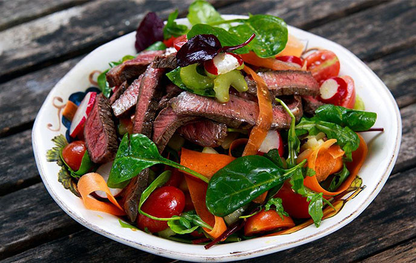
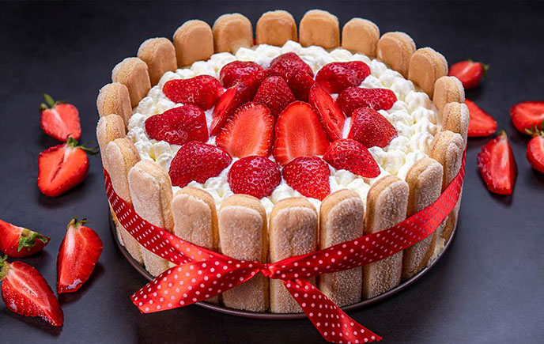

Ratatouille
Es una especialidad regional francesa que consiste en un estofado de diferentes hortalizas típicas del sur de Francia. Proviene de la región de Provenza y del antiguo condado de Niza (sureste de Francia), por lo que se la llama también ratatouille niçoise
Leer más

Salteado de carne de res
Vamos a preparar un salteado de verduras con carne, una comida muy nutritiva y light, ideal para el verano o para gente que está a dieta pero quiere comer algo sabroso.Y es que hacer salteados al wok es una idea genial y muy saludable.
Leer más

Carlota navideña
Es un delicioso pastel frío, que en algunos lugares por esta misma cualidad semeja casi un helado. La que te presentamos hoy es una receta navideña de Carlota de navidad. Para que vayas ensayando el postre que te hará triunfar.
Leer más